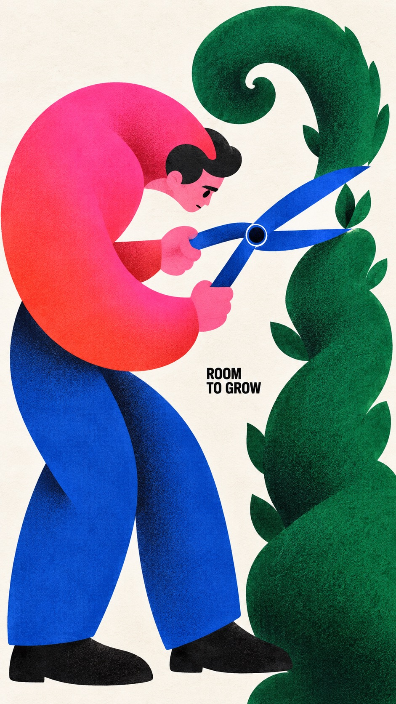
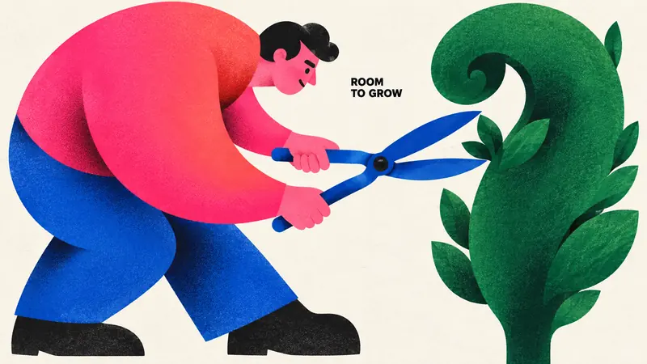
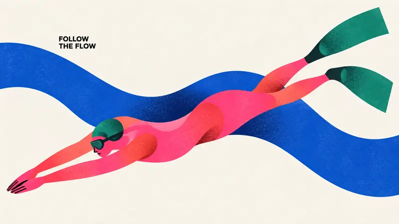
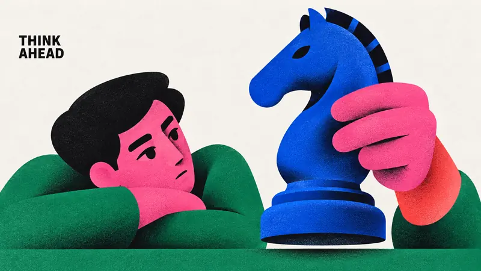
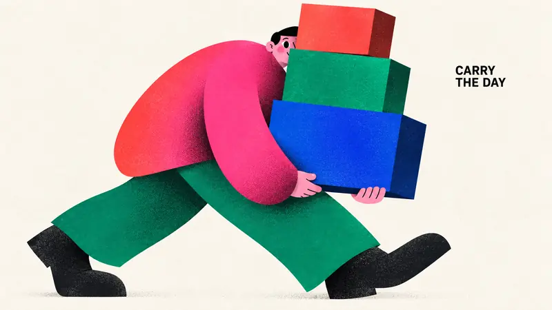

Type Posters · AI image style prompt
Chromatic Gesture Characters — Part 3
Part 3: topiary gardening, freediving, a chess move and carrying boxes in exaggerated geometric figures and hot-pink clashes.

4 example cases
Same style.json, different subjects. Each case's values are in the examples section of the JSON.




What this style does
Part 3 of Chromatic Gesture Characters: keeps the exaggerated geometric figures, hot-pink clashes, grainy airbrush and off-white paper while exploring topiary gardening, freediving, a chess move and carrying stacked boxes.
Signature traits
- Build a monumental, asymmetric character silhouette from few interlocking circles, flattened capsules, wedges, tapered limbs and large flowing contour cuts; enlarge anatomy according to the emotional gesture.
- Use nearly black, radically reduced facial marks and weight-bearing accents; eyes, brows and mouth read as deliberately cut graphic shapes rather than detailed drawing.
- Pair a dominant hot pink or magenta color field with one adjacent warm red or coral gradient and two saturated cool counterweights, on an open off-white paper ground.
- Keep most shapes flat and crisply bounded, with localized dark-to-color airbrushed shading at overlaps or bends and the specified fine print texture; depth must remain graphic.
- Let the character-object interaction carry the poster; sparse small bold black uppercase sans-serif copy occupies a useful pocket of negative space.
- Change pose, gaze, crop, size relationships and title location to make the action legible; a full body, profile crop, enclosing gesture or reclining arrangement are equally valid.
style.json
{
"style_version": "1.0.0",
"style_name": "Chromatic Gesture Characters — Part 3",
"style_slug": "chromatic-gesture-characters-part-03",
"style_summary": "Part 3 of Chromatic Gesture Characters: keeps the exaggerated geometric figures, hot-pink clashes, grainy airbrush and off-white paper while exploring topiary gardening, freediving, a chess move and carrying stacked boxes.",
"environment_variables": {
"ASPECT_RATIO": "9:16 or 16:9",
"STYLE_FIDELITY_ANCHORS": "Runtime joined CORE and FLEX anchors from this spec",
"SOURCE_CONTENT_TO_AVOID": "Runtime joined source-specific content exclusions",
"SUBJECT": "New character identity and a small number of theme-bearing objects",
"ACTION": "Readable physical interaction and emotional expression",
"DESIGN_DIRECTION": "The case concept and its visible contribution to hierarchy and silhouette",
"PALETTE_DIRECTION": "Roles of saturated colors within the shared chromatic system",
"MAIN_TEXT": "Only visible wording, exact uppercase spelling without added punctuation",
"PORTRAIT_PLAN": "Composition intention for the 9:16 image",
"LANDSCAPE_PLAN": "Composition intention for the 16:9 image",
"SUBJECT_ACTION": "the readable physical interaction and emotional expression described in ACTION",
"PRODUCT_OR_PROP": "one or two oversized theme-bearing objects that join the character silhouette",
"LOCATION": "edge-to-edge off-white paper with no scene; depth implied only by overlapping shapes",
"BACKGROUND_ELEMENTS": "bare paper gaps, selective grainy airbrushed shadow and the small black caption",
"SECONDARY_TEXT": "none; MAIN_TEXT is the only visible wording",
"ACCENT_SYMBOL": "the minimal black cut-paper facial marks",
"WARDROBE_STYLE": "flat sculptural garment blocks in hot pink, coral red, cobalt and emerald"
},
"style_fidelity_anchors": [
"[CORE] Build a monumental, asymmetric character silhouette from few interlocking circles, flattened capsules, wedges, tapered limbs and large flowing contour cuts; enlarge anatomy according to the emotional gesture.",
"[CORE] Use nearly black, radically reduced facial marks and weight-bearing accents; eyes, brows and mouth read as deliberately cut graphic shapes rather than detailed drawing.",
"[CORE] Pair a dominant hot pink or magenta color field with one adjacent warm red or coral gradient and two saturated cool counterweights, on an open off-white paper ground.",
"[CORE] Keep most shapes flat and crisply bounded, with localized dark-to-color airbrushed shading at overlaps or bends and the specified fine print texture; depth must remain graphic.",
"[CORE] Let the character-object interaction carry the poster; sparse small bold black uppercase sans-serif copy occupies a useful pocket of negative space.",
"[FLEX] Change pose, gaze, crop, size relationships and title location to make the action legible; a full body, profile crop, enclosing gesture or reclining arrangement are equally valid.",
"[FLEX] Let pruning shears and foliage, diving fins and a water ribbon, a chess knight, or stacked parcels transform the silhouette and negative space as part of the story, with no decorative prop pile.",
"[FLEX] Recompose portrait and landscape around their available width and height; preserve the case's conceptual relationship while changing overlaps and focal placement."
],
"source_content_to_avoid": [
"The original angry seated man with enormous sideways ear, black side-parted hair and crossed short legs",
"The two white pointed steam puffs issuing from nostrils",
"The exact phrase A LITTLE(BIG) MAD. and all source wording",
"The small oval creator stamp, source signature, watermark or brand identity",
"The original green sleeves, blue trousers, pink head and large black shoes repeated in the same placement",
"Part 1 content: saxophone player and puffed cheek, giant pear embrace, umbrella dance, reclining reader and giant book; replace their subjects, actions and wording.",
"Part 2 content: baker stretching dough, bicycle rider, giant dog and walker, frontal photographer and camera; replace their subjects, actions and captions."
],
"visual_deconstruction": {
"source_observations": "The source enlarges the head and ear into a compressed standing monument. The tiny two-line caption is secondary. Magenta cheeks shift into red forehead; curved black mouth and slanted brows establish anger. Green and cobalt body forms stabilize the composition. White steam marks carve the figure.",
"reusable_system": "Emotion becomes shape, not facial detail. Scale contrast, black cut-shape expressions, complementary saturated blocks, grainy localized gradients and sparse paper space are transferable.",
"scope": "Part 3 of an established illustration series. Keep the shared rendering, palette relationships, small captions and exaggerated gesture; develop new content silhouettes without repeating the previous eight concepts."
},
"composition": {
"hierarchy": "Gesture silhouette first, face/object relationship second, small caption third. Keep visual complexity low.",
"negative_space": "Use paper gaps to separate limbs and objects and to carry the caption; no decorative panel framing.",
"ratio_adaptation": "Use the applicable case plan. Portrait may stack or climb; landscape may unfold or stretch. Do not crop a finished portrait to fill the landscape."
},
"typography": {
"family": "Compact bold grotesk sans-serif, plain black uppercase",
"role": "Small editorial aside, approximately 4 to 7 percent of image height as a complete text block, subordinate to the illustration",
"copy": "Render MAIN_TEXT verbatim once. Line breaks are flexible; no additional punctuation, byline, labels or fabricated logo."
},
"color_palette": {
"paper": "#F3F1EB",
"ink": "#10100F",
"hot_pink": "#F553D2",
"warm_red": "#F42726",
"cobalt": "#293EA1",
"emerald": "#13785D",
"relationships": "Hot pink plus warm gradient against emerald and cobalt; roles may shift per case. Use off-white as active negative space and near-black as graphic weight."
},
"image_treatment": {
"medium": "Raster illustration with the shape economy of cut-paper and airbrushed screen print",
"texture": "Fine, low-contrast stochastic halftone-like ink stipple and paper tooth, approximately 1 to 3 pixels at a 1500-pixel short edge. Most visible inside saturated and black shapes; very faint in the off-white background. Dark grain concentrates in shaded overlaps. No large scratches, folds, distress or coarse canvas weave.",
"edges_and_light": "Crisp contour silhouettes, softly diffused interior gradient shadows limited to overlaps and volume turns; matte ink, no glossy 3D illumination."
},
"design_rules": [
"Each case must turn its action into a distinct silhouette and meaningful negative-space relationship.",
"Keep limb and hand anatomy intentionally simplified but physically readable; no accidental extra appendages.",
"Objects must participate in the gesture at an expressive scale instead of floating as accessories.",
"Keep the exact short caption clearly readable with generous separation from the focal face and object.",
"Produce a full-bleed artwork on off-white paper, without a framed mockup or photographic scene.",
"Keep color count controlled and reduce background detail to marks necessary for the case."
],
"do": [
"Use large asymmetric masses with small facial marks.",
"Use white gaps as structural parts of the gesture.",
"Recompose both ratios deliberately.",
"Keep texture integrated with ink and preserve clean silhouette contours."
],
"avoid": [
"Copying the source character, angry pose, steam icons or signature.",
"Photorealistic people, shiny toy renderings, generic cute mascots or outlined cartoons.",
"Huge headline typography, dense labels, decorative stars and extra logos.",
"Four identical centered seated poses with different accessories."
],
"prompt_template": "Use case: stylized-concept. Create one finished {ASPECT_RATIO} editorial character poster in the Chromatic Gesture Characters visual system. This is a standalone raster artwork, edge-to-edge off-white paper, with no surrounding mockup.\n\nPRIORITIZED STYLE:\n{STYLE_FIDELITY_ANCHORS}\n\nSUBJECT: {SUBJECT}\nACTION AND EMOTION: {ACTION}\nDESIGN INTENTION: {DESIGN_DIRECTION}\nCOLOR ROLES: {PALETTE_DIRECTION}\n\nRATIO ADAPTATION: if 9:16, follow this portrait direction: {PORTRAIT_PLAN} If 16:9, follow this landscape direction: {LANDSCAPE_PLAN} Use only the plan appropriate to the requested ratio. Make a coherent single image with natural paper margins.\n\nTEXT: Render exactly \"{MAIN_TEXT}\" once, without quotation marks or punctuation. Plain bold black uppercase grotesk sans-serif, small editorial caption rather than headline. Flexible line breaks in a meaningful empty pocket. No other text or logo.\n\nPRINT FINISH: Fine, low-contrast stochastic halftone-like ink stipple and paper tooth, about 1 to 3 pixels at a 1500-pixel short edge, most visible inside saturated and black shapes, very faint in the off-white background. Dark grain concentrates in shaded overlaps. Crisp silhouette edges; selective soft dark-to-color spray gradients inside overlapping shapes. Matte ink, predominantly flat graphic forms; no glossy 3D rendering or coarse distress.\n\nSOURCE CONTENT TO REPLACE:\n{SOURCE_CONTENT_TO_AVOID}\n\nEXCLUSIONS: no additional words, signatures, logos, watermark, angry source character, steam puffs, extra fingers or limbs, realistic skin, outlined cartoon look, 3D plastic, photographic set, border, dense background, coarse canvas weave, oversized headline or gratuitous decoration.",
"negative_prompt": "Source angry man, steam puffs, original caption, creator oval stamp, copied identity, watermark, logo, extra text, added punctuation, extra limbs, disconnected grips, glossy 3D toy, photorealism, outlined cartoon, coarse weave, scratch distress, huge headline, clutter, frames, poster mockup, previous saxophone, pear, umbrella, reading, dough, bicycle, dog-walker and camera concepts.",
"examples": [
{
"case_name": "shape-the-green",
"values": {
"SUBJECT": "A focused adult topiary gardener with an oversized hot-pink curved torso fading to coral-red, cobalt trousers, small near-black hair and face marks, operating one pair of large simple cobalt pruning shears beside a tall emerald-green topiary with a broad curling crown.",
"ACTION": "Two simplified pink hands each hold one of the two shear handles. The two blades open around a single projecting leafy tip at the edge of the topiary; gardener bends toward it with a small concentrated face. The shear pivot and the two handle-to-blade paths are clear.",
"DESIGN_DIRECTION": "Make the gardener's crescent-shaped back answer the topiary's curling crown, while the open shear blades cut a triangular white gap between them. The sharp blue blade geometry interrupts two soft masses. Show a sculpted silhouette with a few broad leaf notches, not detailed foliage or a garden scene.",
"PALETTE_DIRECTION": "Pink-red gardener upper body dominates one side; emerald crown and slender trunk counter it; cobalt shears and trousers; near-black shoes, hair and tiny facial marks; off-white paper visible between body, shears and plant.",
"MAIN_TEXT": "ROOM TO GROW",
"PORTRAIT_PLAN": "Let the slender topiary rise along one side and the crescent gardener bend in from the opposite side, with open blades around the leaf tip near the upper middle. Small caption sits in a quiet paper pocket. Keep both grips and the blade pivot in frame; broad outer foliage may crop intentionally.",
"LANDSCAPE_PLAN": "Place the bent gardener on the left and the curling emerald crown on the right; stretch the two open blue blades through the white gap between them. Show the gardener's face, both hands and the blade contact clearly; small caption above the empty gap. Avoid adding a pot, ladder or tool pile."
}
},
{
"case_name": "quiet-current",
"values": {
"SUBJECT": "An adult freediver in a simple hot-pink one-piece suit, with coral-red transitions across the curved body, emerald swim fins, a compact emerald cap, and a minimal near-black mask, moving through one broad cobalt-blue S-shaped water ribbon.",
"ACTION": "The diver glides headfirst with both arms extending together in front of the head, palms close without merging; two relaxed legs trail behind with two separate large fins. The body arches gently, giving a calm feeling of weightless movement. No scuba tank, snorkel tube, bubbles, fish or scenery.",
"DESIGN_DIRECTION": "Use the diver's pink elongated body and the broad blue water ribbon as interweaving curves. The water ribbon is a flat editorial cut-shape, not a realistic sea. Paper gaps distinguish arms, torso and fins; the diver remains one clearly connected figure.",
"PALETTE_DIRECTION": "Large pink-to-coral body and arms, cobalt water ribbon with localized dark grain at one curve, emerald cap and two fin planes, near-black tiny mask and face marks, extensive off-white paper.",
"MAIN_TEXT": "FOLLOW THE FLOW",
"PORTRAIT_PLAN": "Angle the diver head-down along a tall descending curve: fins near an upper corner, long body through the center, paired outstretched hands toward the lower opposite corner. A single blue water S passes behind the torso. Fit hands and both fins with paper clearance; small caption in an upper side pocket.",
"LANDSCAPE_PLAN": "Unfold the diver across the width, reaching headfirst toward the left with fins trailing at the right. The single cobalt water S crosses behind the torso and opens into wide paper space. Keep both hands, head and two fins readable and contained; caption occupies an open upper paper pocket."
}
},
{
"case_name": "knight-move",
"values": {
"SUBJECT": "A thoughtful adult chess player with a small hot-pink face, near-black hair and eyebrow marks, emerald sleeves, one monumental pink hand with a coral-red wrist, and one oversized sculptural cobalt-blue knight chess piece on a simple low emerald tabletop strip.",
"ACTION": "The huge near hand holds the knight gently by its neck just below the horse head, lifting the base slightly above the tabletop; the other forearm rests on the table beneath the small tilted face. The attentive eye looks toward the piece. Only one chess piece is present.",
"DESIGN_DIRECTION": "The giant blue horse-head silhouette is the visual focal point, balanced by a curling pink grip and the small thinking face. A narrow paper gap under the lifted circular base signals the decisive move. Make a spare gesture study rather than a board diagram or trophy image.",
"PALETTE_DIRECTION": "Cobalt knight with near-black cutouts for the horse eye and mane notches, hot-pink hand and face with coral wrist gradient, emerald sleeve and table strip, near-black hair, off-white ground.",
"MAIN_TEXT": "THINK AHEAD",
"PORTRAIT_PLAN": "Stack the tall knight and giant grip through the middle, with the small thinking face peeking from one upper side and the low table strip grounding the lower area. Preserve the complete horse-head silhouette and base, including the thin paper gap below it. Place small caption in the upper opposite corner.",
"LANDSCAPE_PLAN": "Place the thoughtful face and resting forearm on the left and the large held knight on the right; the pink hand bridges across their gap. Keep the low table strip short and simple. Preserve the complete knight silhouette and lifted-base paper gap; caption in a quiet top pocket. No other game pieces or board grid."
}
},
{
"case_name": "carry-the-day",
"values": {
"SUBJECT": "An adult mover with a monumental hot-pink coat warming to coral-red at its bent back, emerald trousers, near-black shoes, and a small pink face mostly hidden behind a stack of three plain cuboid parcels: cobalt bottom box, emerald middle box, smaller coral-red top box.",
"ACTION": "The mover walks with a low wide stride while both forearms support the cobalt bottom parcel from underneath. The three boxes stack in contact and lean gently opposite the body. One small eye and nose peek around the left edge of the stack; the boxes have blank unbranded faces.",
"DESIGN_DIRECTION": "Use the slightly offset cuboid stack as an architectural counterweight to the sweeping pink back and bent legs. The peeking face provides comic tension. Plain rectangular planes contrast with rounded anatomy; keep the stack supported and stable enough to read, without additional loose parcels.",
"PALETTE_DIRECTION": "Pink-red coat as the broad human mass; three boxes using cobalt, emerald and coral-red; emerald trousers, near-black shoes and tiny face marks, off-white ground. Box depth uses a single dark side plane with restrained granular gradients.",
"MAIN_TEXT": "CARRY THE DAY",
"PORTRAIT_PLAN": "Build a tall slightly leaning column of three boxes on one side, with the pink arched back and peeking face beside it and wide-set feet beneath. Show both supporting hands contacting the bottom box; place the small caption in open upper paper. Keep all three boxes in frame with a modest top margin.",
"LANDSCAPE_PLAN": "Let the walking figure occupy the left half with a strong diagonal pink back and long stride; place the three-box stack in the center-right, offset enough to make a stepped silhouette. Both arms support the bottom box; all box corners, shoes and peeking face stay visible. Use upper-right paper space for small caption."
}
}
],
"category": "Type Posters"
}